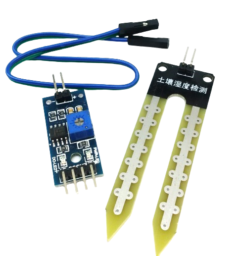

EcoSense Pro - Smart Environmental Monitor
Introducing our EcoSense Pro, a sophisticated blend of technology and nature.
This compact and versatile monitor combines sensors to deliver a comprehensive overview of key environmental factors, ensuring you stay informed and in control.
This innovative smart monitor seamlessly integrates a soil sensor, DHT11 sensor, carbon sensor, and the powerful ESP8266 microcontroller, delivering a holistic approach to environmental monitoring.
Environmental Insights:
Smart Soil Sensor

The Smart Soil Sensor is an advanced agricultural tool designed to monitor and analyze soil conditions for optimal plant growth. This compact device measures key parameters such as soil moisture levels, temperature, and nutrient content. Equipped with smart technology, it provides real-time data and insights to farmers, allowing them to make informed decisions regarding irrigation, fertilization, and overall crop health. The sensor is a valuable component in precision agriculture, promoting resource efficiency and sustainable farming practices by ensuring that plants receive the right amount of water and nutrients precisely when needed.DHT11 Sensor

The DHT11 sensor is a cost-effective and widely used digital temperature and humidity sensor. Known for its simplicity and reliability, the DHT11 is capable of measuring ambient temperature within a range of 0 to 50 degrees Celsius and humidity from 20% to 90%. Its compact design, low power consumption, and digital output make it a popular choice for various applications, such as weather stations, home automation systems, and environmental monitoring devices. The sensor communicates through a single-wire digital interface, providing accurate and easily accessible temperature and humidity data for electronic projects and IoT applications.Carbon Sensor for Air Purity:

The MQ-7 Carbon Sensor is a gas sensor that specializes in detecting carbon monoxide (CO) concentrations in the air. It operates on the principle of conductivity changes in a semiconductor when exposed to varying levels of carbon monoxide. This sensor is commonly used in environmental monitoring systems, gas leak detection devices, and industrial safety applications. The MQ-7 sensor provides a reliable and cost-effective solution for measuring and alerting users to potentially harmful levels of carbon monoxide, a colorless and odorless gas that can be hazardous to human health.ESP8266 Microcontroller for Connectivity:

The ESP32 is a versatile and powerful microcontroller and Wi-Fi module developed by Espressif Systems. It is widely used in the field of electronics and IoT (Internet of Things) applications due to its dual-core architecture, built-in Wi-Fi and Bluetooth capabilities, and a rich set of peripherals. The ESP32 supports low-power operation, making it suitable for battery-powered devices. It is programmable using the Arduino IDE and offers a cost-effective solution for a variety of projects ranging from simple sensor nodes to complex IoT applications. Its flexibility, efficiency, and connectivity options make the ESP32 a popular choice for developers and hobbyists alike.